| SEOに効く！アフィリエイトに効く! WordPressでサクッと口コミ評価サイトを作る！ | |
| 柴犬会長 | |
| The President of Shiba Inu (2015) | |
レンタルサーバーでWordPressを利用し新たなサイトを作ろうとすると、申し込みから各種設定、キーワード選定、WordPress導入・更新・プラグイン等々、サイト準備する前に様々なことを行わなくてはなりません。普段WordPressを使い慣れている人でも「入れるべきプラグインって何だっけ？」と、よく忘れます。また、設定する順序も考えなくてはなりません。本書では、レンタルサーバーへの申し込みからWordPress導入、ドメイン設定、SEOに最適なテーマと主要なプラグインの導入、アクセス解析・ウェブマスターツールの導入、最終的には「口コミ評価サイト」を作る一連のプロセスまで詳細に説明しています。さらにメルマガ配信の構築方法も載せています。プラグインは多数ありますが、その中でも設定しやすく、わかりやすいプラグインを選びました。さらに加えてグーグル検索結果で表示されるレビュー設定方法も記載してあります。これらは、３５０を超える画像を用いて説明しておりますので、構築するプロセスを理解しやすいです。本書を手に入れればWordPressにおける「口コミ評価投稿・メルマガ配信システム」を手に入れたようなものです。設定手順をググる苦痛からも解放され、特に何も考えず最速で設定できます。
SEOに効く！アフィリエイトに効く！ WordPressでサクッと口コミ評価サイトを作る！
作者：柴犬会長
レンタルサーバーを借りる
本書でのレンタルサーバーはミニバード（mini bird）を利用します。
料金の安いその他レンタルサーバーとして、さくらインターネットやロリポップが有名です。ここ最近（2015年7月）は様々なレンタルサービスやクラウドサービスが出てきています。エックスサーバーは誰もが勧めるレンタルサーバーですが、月額使用料が1000円を超えてしまいます。一方のミニバードは月額250円です。
ミニバードの利点としては安い価格帯のレンタルサーバーにおいて、レスポンスが早く、データベースが５つ使えるのが利点です。一つのレンタルサーバーで5つのWordPressを稼働させされるので、非常に経済的です。WordPressサイトを複数作成し稼働させるレンタルサーバーとして最適なサーバーの一つです。
ミニバードを利用するには下記のような手順で登録・申し込みをします。
ネットオウル会員登録
↓
決済登録情報登録
↓
「ミニバード管理」から「新規取得」
↓
次ぎにサーバーIDを決めます。このドメインがミニバードが提供するドメインとなります。私は口コミ評判サイトとして「kutikomi」と入力しました。（独自ドメインの設定に関しては後ほど説明します。）
これを確定していくと・・・次のような画面になります。
↓
「サーバー設定完了後」とありますが、私が申し込んだ際には直ぐに完了メールが届きました。以上でミニバードのレンタルサーバーを借りることが出来ました。
サイトテーマを考え、キーワードを選定する
今回、口コミ評判サイトを作成しますが、WordPress導入、独自ドメイン設定の前に、まず「サイトテーマ」を決定しなければなりません。口コミ評判で集客し、販売するという一連のプロセスの為の「口コミ評判サイトのテーマの決定」です。
口コミや評判サイトと言えば、「価格ドットコム」が有名です。「価格ドットコム」は価格だけでなく、その製品の評判を記載することにより、購入意欲の高いユーザーを集客し続けています。その他、「食べログ」では外食したいと思うユーザーを、「Amazon」は主に本を購入したいユーザーです。最近では「転職会議」が企業の評判・口コミで転職したいユーザーを集客し、転職サービスを展開しています。
つまり、何らかの販売物・それに関連する口コミや評判によって集客し、うまく販売に結びつけたいわけです。ところで、アフィリエイトにおいて稼げるテーマとして紹介されるのが、下記の３つのテーマです。
- 稼げるモノ・ノウハウ系
- 恋愛・モテる系
- 悩み・コンプレックス系
先に明かしますが、本書が設定する売り物として、服を考えています。ここで服と結びつけるテーマとしては、恋愛・モテる系、悩み・コンプレックス系になるかと思います。ザックリとですが、キーワードとして、
- 服
- 恋愛
- モテる
- 悩み
が浮かび上がってきました。そして恋愛、つまり異性を意識した時、つまり「デート」「合コン」ではないかと考えました。
- 「デート 服装」
- 「合コン 服装」
ここで、実際にこのキーワードでGoogle検索してみます。

検索サジェストで、「男」「女」というキーワードが合わせて表示されました。グーグルのサジェスト機能は検索されるのが多いキーワードが表示されるので、キーワード選定に有効です。
合コンの方も「男」「女」また「春」「夏」と季節用語が出てきました。さて、これらキーワードからまとめて、サイトテーマ（サイトタイトル）を決めます。
- 服装
- デート
- 合コン
- 男
- 女
しばらく考えまして・・・「合コン・デートの服装 - ウケと評判！ 男 vs 女」というタイトルで口コミサイトを作ろうと思います。季節用語は無視しましたが、頭の片隅に残しておきます。
今回はgoogleのサジェスト機能のみで選定してしましたが、キーワード選定やサイト内容に含ませるキーワードの選定に役立つサイトがありますので、紹介したいと思います。
Googleサジェストをより詳しく表示させることが出来ます。おすすめです。
キーワード広告の単価・難易度をザックリと知ることができます。
そして、次にキーワード検索から上位表示させる、いわゆるSEO難易度を知ることができるサイトを紹介します。
http://seopack.jp/keyword/index.php
実際に「デート 服装」「合コン 服装」で難易度チェックしてみますと、
と表示されます。このサイトに「はじめてSEO対策する方には、【SEO難易度が70以下】かつ【検索数が5,000以下】のワードがおすすめです。」とあるので、しっかりとSEO対策をすれば、検索結果１ページ目に表示される可能性が高いです。ちなみに上位表示の難しい儲かる・稼ぐ系のキーワードの筆頭である「FX」をチェックしますと、
と、難易度87と表示されました。この「FX」で検索結果１ページ目を表示させるのは至難の技です。
・・・とこのようにテーマを決め、キーワードを決めて、難易度等を確認してタイトルを決めていくわけです。
独自ドメイン名を決定し取得する
独自ドメインの取得先は「お名前.com」「ムームードメイン」が有名です。本書では「ムームードメイン」を利用して取得します。
下記が手順です。
新規登録
↓
ログイン
↓
ここで独自ドメインを決めます。「合コン・デートの服装 - ウケと評判！ 男 vs 女」に沿ったドメインを考えて決めます。キーワードとしては「服装」は必須で「合コン」か「デート」の組み合わせかと思います。残念ですが２つ入れるのはURLが長過ぎです。URLが長いと覚えられにくいなどの弊害が出てきます。
- goukonnnofukusou
- de-tonofukusou
実際にこれでGoogle検索してみましょう。
次の図は「goukonnnofukusou」と検索した結果です。
次の図は「de-tonofukusou」と検索した結果です。
検索結果を比較すると「de-tonofukusou」の方が多いです。デートの服装に関する情報サイトが合コンの服装に関する情報サイトより多い→デートの服装の方が関心が多い、と言えますので、本書では「de-tonofukusou」で運用しようと思います。なお、迷ったらサイトを２つ作って同時運用するなどの選択肢もあります。
「de-tonofukusou」で検索すると、ドメイン「xyz」で¥99円と非常に安く取得出来ることがわかります。これを取得し設定すれば、「http://de-tonofukusou.xyz」のURLを利用できるわけです。右側にある緑枠の丸ボタンをクリックし手順に従って取得します。最終的には取得完了メールが届きます。
これで独自ドメインは取得できたことになります。
レンタルサーバーに独自ドメインを設定する
レンタルサーバーに独自ドメインを設定するには、ムームードメインの情報とミニバードの情報を紐付けします。わかりにくいですが、下記の手順に従えば問題ありません。
ミニバードの「サーバー管理ツール」にアクセスして、サーバー情報のネームサーバーの情報をメモします。
↓
ここでメモするのはネームサーバーの部分です。
ミニバードのネームサーバーは、
- ns1.minibird.jp
- ns2.minibird.jp
- ns3.minibird.jp
であることがわかります。次に、ムームードメインのコントロールパネルにアクセスし、このネームサーバーを設定します。

https://muumuu-domain.com/?mode=conpane
↓
ドメイン名をクリックすると、画面が切り替わります。
↓
「ネームサーバ設定変更」をクリックします。
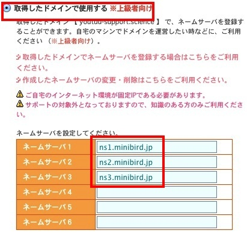
下方にある「取得したドメインで使用する」にチェックし、先にメモしたネームサーバー情報を記入します。入力し終えたら下方にある「ネームサーバ設定変更」をクリックして先に進めます。
↓
次のような画面がでればOKです。

ミニバードの「サーバー管理ツール」に戻り、メニューの「ドメイン設定」を開きます。
↓
ここのタブ「ドメイン追加」をクリックし、「他社管理のドメインを追加する」をクリックします。
↓
下記のように取得したドメインを記入し、「確認画面」ボタンを押します。
↓
しかし、下記のようなメッセージが出てうまくいきません。
これは、先のネームサーバの設定に時間がかかるからです。
しばらく、休憩するなどして再度行ってみて下さい。私は10分後に再度行ってみました。・・・すると、次のように画面が切り替わり
↓
無事にレンタルサーバーに独自ドメインを設定するが出来ました。
WordPressを導入する
サーバーに「WordPress」を導入します。ミニバードは予めWordPressをインストールするツールがあるので、これを利用して導入することになります。さっそく行います。
「サーバーアカウント一覧」から「サーバー管理ツール」をクリックします。
↓
「サーバー管理ツール」をクリックします。（なお現在（2015年7月）２週間ほど試用期間として無料で使えます。試用期間が終わる前にこの画面で「本契約」として支払いをするわけです。）
↓
別ウインドウが開きます。左側にあるメニューの「簡単インストール」をクリックします。
↓
ここで決定した独自ドメインの右にある「選択」をクリックします。
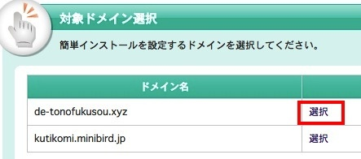
↓
「追加インストール」をクリックし、下方にあるWordPressの「インストール設定」をクリックします。
↓
画面が下記に切り替わります。 空欄にそれぞれ各自決めた文字列を入力していきます。
本書の作成するサイトタイトルは「合コン・デートの服装 - ウケと評判！ 男 vs 女」と決めましたので、「ブログ」のところは「合コン・デートの服装 - ウケと評判！ 男 vs 女」としています。インストール先は空欄のままで、それ以外は各自決めて入力します。
- 「インストール先」・・・（空欄のまま）
- 「ブログ名」・・・合コン・デートの服装 - ウケと評判！ 男 vs 女
- 「ユーザ名」・・・（各自決めて下さい）
- 「パスワード」・・・（各自決めて下さい）
- 「メールアドレス」・・・（各自決めて下さい）
↓
入力し終えたら「確認画面」を押します。画面が切り替わって続けて「確定する」を押すとブログの「ログイン情報」と「データベース情報」が表示されますので、これをメモしておきます。
↓
では実際にログインフォームのURLをクリックしてログインしてみましょう。
上記のように表示されたら、まだ設定の反映待ちです。私のケースですが、ここで10分程度待ちました。ログインして手順に従い、次のような画面になればOKです。
なお、同時にサイトも公開されますので、確認しましょう。
と表示され、（*独自ドメインに対する）サーバーへWordPressが導入されたことが確認出来ます。
（*ミニバードは、ミニバードから割り当てられたドメイン（本書では「http://kutikomi.minibird.jp/」）に対して、独自ドメインを設定するようにはなっていないようです。先に独自ドメインを取得し、その独自ドメインに対してWordPressをインストールする、という流れになります。本書の手順で行った方が良いです。）
これでミニバードへWordPressが導入されました。
WordPress更新とセキュリティ対策をする
WordPressを導入したら、その更新をします。更新は下記の図の更新アイコンをクリックします。
なお更新としては、
- WordPress本体の更新
- プラグインの更新
- テーマの更新
と３種類あります。それぞれ必要に応じて更新します。更新は簡単で、更新する対象をチェックし、更新ボタンを押せば、完了です。
では、プラグインの更新をします。プラグイン「Akismet」の左をチェックし、「プラグインを更新」をクリックすれば完了です。「すべて選択」でも良いです。
さて、このプラグインの「Akimet」はあらかじめスマム対策のプラグインの一つですが、WordPressを導入したらまずはセキュリティ対策のプラグインを導入し、有効化します。「Akimet」は最初から導入されていますが、有効化されていませんので、これを有効化します。
左メニューの「プラグイン」をクリックします。
↓
右側に表示される「Akismet」の下にある「有効化」をクリックします。
↓
プラグインは有効になりました。次にAkismetのアカウントを有効化します。
↓
ここで「Akismet」のAPIキーを入力しなければなりません。APIキーを取得するために、「APIキーの取得」をクリックします。
↓
↓
クリックして飛んだサイトで「GET AN AKISMET API KEY」をクリックします。すでに「WordPress.com」に登録している人はログインできます。登録していない方はここで新規登録します。
↓
登録しログインすると左側に「Basic」が表示されているので、この「GET STARTED」をクリックします。
↓
すると今度は右側に次のような図が表示されます。この「$36.00/yr」をスライドさせて「0.00/yr」にしましょう。これで「Akismet」を無料で利用できます。
↓
↓
すると左側の表示か下記のように変わるので、この「CONTINUE」をクリックします。
↓
↓
表示が変わります。ここにAPI KEYがあります。「SHOW」を押すと文字列が表示されますので、WordPressのダッシュボードに戻り、これを入力し、「このキーを利用」を押せばすべて完了します。
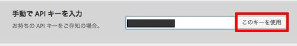
さて、 マルチバイト文字の取り扱いに関する不具合の累積的修正と強化を行うプラグインである「WP Multibyte Patch」を有効化しておきましょう。これは「有効化」をクリックするだけでOKです。
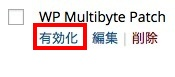
次にログイン対策用のプラグインである「SiteGuard WP Plugin」を導入しましょう。これはWordPressのバージョンによって入っていたり入っていなかったりします。今回は入ってなかったので、プラグインから検索して導入します。
このプラグイン「SiteGuard WP Plugin」はログインのURLを変更させることが出来ます。WordPressの管理画面へのログインURLは通常「サイトURL/wp-login.php」なので、悪意のある人（悪意のあるプログラム）はこれを知っていて、ログインを試みようとします。このログインURLを変えることでセキュリティが向上します。
導入は下記の手順で可能です。
ダッシュボードの「プラグイン」の「新規追加」をクリックします。
↓
右側にある検索窓から「SiteGuard WP Plugin」を入力しエンターキー
↓
上記が表示されるので、「いますぐインストール」をクリック、有効化します。
↓
上記のような表示がされますので、右端にある「こちら」をクリックします。
↓

上記が変更後のログインページURLです。このURLはここで変更可能です。実際にこのURLにアクセスすると下記のような画面になります。
↓
新たに文字認証が追加されており、ログインに関するセキュリティは非常に強固になりました。なおこのプラグインを停止し、有効化するとログインURLが再度変わるので気をつけて下さい。
WordPressのテーマを変更する
今回、口コミサイトに使うWordPressのテーマは「Simplicity」です。

上記URLにアクセスし、ダウンロードします。右側のメニューに「最新版のダウンロード」とあるのでこれをクリックします。
↓
左側に表示される最新の開発版をダウンロードします。（なお、本書の執筆現在[2015年7月]は、「バージョン：1.7.6 20150630c」です。）
↓
zipファイルがダウンロードされます。
ダッシュボードに戻り「外観」の「テーマ」を開きます。
↓
テーマの「新規追加」をクリック、
↓
「テーマのアップロード」をクリック、
↓
ここで先ほどダウンロードしたファイルを選択し「いますぐインストール」をクリックします。
これを有効化すれば、テーマが「Simplicity」となります。
↓

下記が初期状態です。
テーマのデザインがシンプルだとカスタマイズしやすいです。ソーシャルボタンや関連記事表示も標準でついています。数多いWordPressのテーマの中、「Simplicity」はおすすめのテーマの一つです。
サイト表示高速化のプラグインを導入する
SEO対策・高速化の為のプラグインを導入します。具体的には下記の３つです。
- Head Cleaner
- W3 Total Cache
- EWWW Image Optimizer
上記以外にもSEO対策・高速化のプラグインは数多くあります。その中で上記の３つを選んだのは安定している（導入後のバグがない）、導入がわかりやすい、多くの人に受けいられ評価されている、という点です。よくわからない人や特にこだわりがない人は上記の３つで良いかと思います。
ではまず「Head Cleaner」を導入します。このプラグインはサイト表示速度を向上させてくれます。
「プラグイン」の「新規追加」を開き、
↓
検索窓に「Header Cleaner」と入力してエンターキーを押します。
↓
「いますぐインストール」を押し、有効化した後、設定します。
設定は「チェックをする」「チェックを外す」の選択をし、更新するだけですので簡単です。具体的には下記のようにします。
↓
上記の部分にチェックし、それ以外のチェックは外します。そして、更新ボタンを押します。
「 Head Cleaner」はこれでOKです。
次は、「W3 Total Cache」です。名前の通り、キャッシュを利用して表示速度の高速にさせるプラグインです。さっそく検索してインストール、有効化します。
↓
↓
さて、設定をしていきましょう。
これもチェックとチェック外しの選択となります。具体的には、下記４つのキャッシュを有効にします。
- Page Cache
- Database Cache
- Object Cache
- Browser Cache
対象となる項目にチェックして、それ以外はチェックしません。具体的にみていきましょう。
それぞれの「Enable」にチェックします。
また項目の「Miscellaneous」では「Enable Google Page Speed・・・」のチェックを外します。「Verify rewrite rules」はチェックしたままにしておきます。
↓
ここでセーブします。下記のボタンを押します。いくつもありますが、どれでもよいです。

さて、さらに有効にした下記に対して詳細に設定していきます。
- Page Cache
- Database Cache
- Object Cache
- Browser Cache
それぞれを詳細に設定する画面を開くには、ダッシュボード左メニューの該当する箇所を押せば可能です。
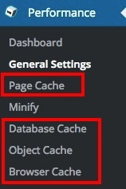
まずは、「Page Cache」からです。
上記２つにチェックがあるか確認します。
rss2(default)へのチェックは外します。「Page Cache」は完了です。
ここで保存（「Save all settings」を押す）して、次は「Database Cache」です。
「Database Cache」は上記へのチェックのみでOKです。他の項目にある数値などはいじりません。
次に「Object Cache」ですがこれは特にいじりません。最後に「Browser Cache」です。
↓
上記４つにチェックをすればOKです。下方に色々と項目がありますが、いじらなくてよいです。確認し、保存しましょう。
さて、キャッシュというものは表示が早くなり快適なものである一方、厄介なものでもあります。例えばデザインを変更しても変わらなかったりします。これはキャッシュが邪魔しているからです。新たに記事を追加するなどは良いですが、既存のものを編集したりするのは、既存のキャッシュがあってこれが邪魔している場合があります。ですので、なるべくWordPressを編集したりデザイン変更したりした際にはキャッシュをいったんクリアにします。
やり方は非常に簡単で、「Empty the page cache」をクリックするだけです。
最後のプラグインは「EWWW Image Optimizer」です。このプラグインは画像を圧縮し表示速度をあげるプラグインです。
↓
↓

設定画面をみるとタブによってそれぞれ設定するようになっています。
設定する際には該当するタブをクリックし、設定することになります。なお「Cloud Settings」タブはいじりません。
まずは「Basic Settings」タブです。 チェックする箇所は下記の１つです。
次は「Advanced Settings」タブです。ずっと下方にある「disable pngout」にチェックです。
最後に「Conversion Settings」タブです。これも１つです。
↓
すべてチェックし終えたら、保存して終了です。
以上で下記の３つのプラグインが完了しました。
- Head Cleaner
- W3 Total Cache
- EWWW Image Optimizer
この作業をやるだけで、サイト表示の速度がかなり早くなります。上記のチェックをする（外す）だけなので面倒くさがらずにやりましょう。
WordPressに記事を投稿する
それではWordPressに記事を投稿します。記事がないとウィジェット表示がされなかったしてデザインのカスタマイズに支障がでます。少なくとも３つくらいの記事は欲しいところです。
さっそく、記事を書いていきます。ダッシュボードのメニューの「投稿」をクリックします。
↓
すでにタイトル「Hello world!」の記事がありますので、これを編集して記事としましょう。
ここで右側の画面が切り替わります。この画面で決めてやるべきことは下記の５つです。
- タイトルを決める
- パーマリンクを決める
- 記事内容を決める
- カテゴリーを決める
- アイキャッチ画像を決める
まずはタイトルです。記事タイトルはいわゆる検索結果上位表示のSEOを考えると、ここにキーワードを入れた方が良いです。

サイトは、合コン・デートに関する服装でした。この記事のタイトルは「３０代男性向け！上質に浮かび上がる大人柄。」としました。
次にパーマリンクです。これはこの記事のアクセスURLを決めることが出来ます。これはわかりやすいURLにすることでSEOにも効果があると言われています。
↓
「編集」ボタンを押すと、編集出来ます。
↓
商品内容・タイトルからの関連を考え「30dai-dansei」としてみました。
↓
決めたら「OK」ボタンを押して確定します。
次に記事内容です。記事内容は文章を考え入力して下さい。なお、画像を追加する際には、「メディアを追加」ボタンを押します。
↓
ここでファイルをアップロードし、
↓
右側に表示されている「投稿に挿入」ボタンを押せばOKです。なおここで、画像のタイトル、キャプション、代替テキストやサイズまで指定できます。SEOの観点からですと、可能な限り入力した方が良いでしょう。
次はカテゴリーです。カテゴリーは初期に「未分類」カテゴリーがあるだけです。新たに追加します。
↓
「+新規カテゴリーを追加」をクリックすると、入力できるようになります。今回は「メンズ」カテゴリを追加します。メンズと入力欄に入れて、「新規カテゴリーを追加」ボタンをクリックします。
↓
そうすると「未分類」に加えて「メンズ」が追加されます。「メンズ」にチェックを入れて「未分類」へのチェックを外します。
これで、この記事のカテゴリーが「未分類」から「メンズ」カテゴリーに変更されました。
さて最後にアイキャッチ画像です。アイキャッチとは記事一覧表示された際に左にある画像のことを言います。設定すると、下記のようになります。
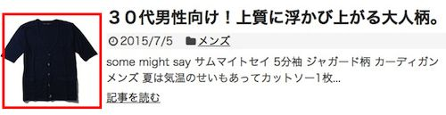
記事内容に沿った画像を載せることで、興味を引きやすくします。画像は縦横150×150pxを用意します。
「アイキャッチ画像を設定」ボタンを押します。
↓
ファイルをアップロードします。
↓
アップロードされた画像が右下に表示されますので、ここで「アイキャッチ画像を設定」ボタンを押します。
↓
設定されました。なお、アイキャッチ画像を変更したい場合は、いったん「アイキャッチ画像を削除」をクリックすればOKです。ここでクリックしてもアップロードした画像はサーバー上に残っているので、再度設定出来ます。
さて、
- タイトルを決める
- パーマリンクを決める
- 記事内容を決める
- カテゴリーを決める
- アイキャッチ画像を決める
上記すべての入力が終わりました。この記事を公開しようと思います。元々「Hello World!」だったので、「更新」ボタンを押します。
↓
確認の為に「投稿を表示する」で、 内容を確認してみて下さい。
記事内容が確認出来たらOKです*。
（*なお、これを執筆中に編集がタイトル「Hello World!」に戻ってしまう場面に出くわしました。おそらく、キャッシュが邪魔をしてしまったのだと思われます。リビジョンの「表示」を押して復元することで解決しました。
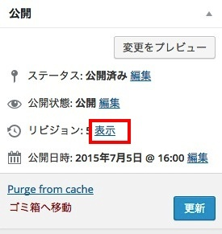
元記事を編集する際にはキャッシュの不具合に出会うかもしれませんが、上記の画面から対応可能です。）
一つの記事では物足りないので、「新規追加」をクリックして記事を追加して下さい。
これを繰り返します。いくつかの記事を追加したらサイトを見てみます。
サイトらしくなってきました。
さて、各記事の下方に次のような表示がされていると思います。
これはセキュリティの面から、管理者表示をログインユーザー名ではなく、違う名前にした方がよいとおすすめしています。ですので、これを変える為に「プロフィール設定」をクリックします。
↓
ここで「名」と「性」を決めます。これが変更後の表示名となります。私は、「店」「長」としました。入力しましたら、下方にある「プロフィールを更新」ボタンを押します。
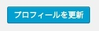
↓
「ブログ上の表示名」で「店 長」を選びました。
再度「プロフィールを更新」ボタンを押せばOKです。
↓
店 長 へと変わりました。
以上です。
なお、いわゆるSEO対策としては、キーワードを含めた「記事の文字数・記事数」が多ければ多いほどよいです。検索されるキーワードのターゲットが広がります。もちろん、人を惹き付ける内容であればソーシャルボタンで拡散されて多くのアクセスを得られることになります。ただ一方で、アクセスを得られたからといって、物を売るターゲットとなり得るかは別の話です。これがなかなか難しいのがインターネット上での集客であり、販売です。
テーマに合ったデザインにカスタマイズする
記事を入れましたが、デザインとしてはシンプルすぎます。
またサイトに不要と思われる項目やメニューなどを表示させないなど、カスタマイズしていきます。好みのデザインは人それぞれなので、最終的には個人個人の判断で決めます。下記からの説明は、私の好みのデザイン設定となりますが、そのプロセスを参考になさって下さい。
ダッシュボードの外観にある「カスタマイズ」をクリックします。
↓
画面が切り替わって左側にメニューが表示されます。ここで文字変更や全体的なデザイン、色などを変更出来ます。「サイトタイトルとキャッチフレーズ」の「キャッチフレーズ」がまだ「Just another WordPress site」とあるので、これをサイトテーマに合った「異性からの意見で失敗しない服装を選ぶ！」としました。
↓
「スキン」ですが、「深紅きなり」を選びました。
レイアウト（全体・リスト）は「完全レスポンシブデザインにする」にチェックしました。
これでブラウザの横幅に応じて表示がスムーズに切り替わります。
「グローバルナビを表示」ですが、このグローバルナビは、タイトル下にある「サンプルページ」のメニュー部分です。
なお、ここにあるサンプルページは「固定ページ」編集可能です。
↓
デザインのカスタマイズが終わったら「保存して公開」を押します。
先ほどのサンプルページを編集する場合は、ダッシュボードにある「固定ページ」をクリックし、「編集」を押します。
↓
「サンプルページ」ではおかしいので、「当サイトのコンセプト」などのタイトルにし、内容としてサイト説明やサイト利用方法などを記載すれば良いでしょう。
さて、よりシンプルなサイトにしたいので、右メニューにある「」「最近のコメント」「アーカイブ」「メタ情報」、さらに下方にある「コメント」とコメント投稿個所を非表示にしたいと思います。
↓
外観の「ウィジェット」をクリックし、右側にある「サイドバーウイジェット」を編集します。
↓
非表示にさせる対象となる「最近のコメント」「アーカイブ」「メタ情報」を枠外にドラックアンドドロップすればOKです。
↓
それぞれ行って最終的には、サイドバーに「検索」「最近の投稿」「カテゴリー」の表示がある状態となります。
これでサイドバーはOKです。次に下方にあるコメントですが、これはダッシュボードの外観の「カスタマイズ」にあります。
↓
切り替わった画面の左がの「コメント」部分です。ここで「コメントの表示」へのチェックを外します。
↓
なお、コメントでは２ちぇんねるのようなスレッド式にも出来るようです。
保存して終了です。
なお、右にサイドバーを左にしたり、アクセス解析コードの設置や、ソーシャルボタンの選択、ヘッダーへの背景画像の設置など、様々な設定がこの「カスタマイズ」にて行えます。私は左サイドバーが好みなので、変更しました。（「レイアウト（全体・リスト）」の「サイドバーを左側に表示」へチェック）
サイトテーマの雰囲気が出てきたと思います。
記事アクセスランキングのプラグインを導入する
これは、ウィジェットの「[S]新着・人気記事」で実現させます。
上記に記載してあるように、プラグイン「WordPress Popular Posts」が必要ですので、これをインストールし、有効化します。
↓
ここで、ダッシュボードにある外観の「ウィジェット」をクリックし、「[S]新着・人気記事」を「サイドバーウイジェット」に入れて表示させましょう。
↓
空欄に対して文字を入力します。
↓
集計単位は集計する期間を設定します。
集計単位は１ヶ月にしました。その他、「集計単位の表示」「閲覧数の表示」「ランキング順位の表示」にチェックすれば、それぞれ表示されます。「保存」ボタンを押します。
サイト（トップページ）を見ますと、下記のように表示されるのが確認できます。
なお、個別の記事に行くと新着記事が表示されます。
常に人気記事を表示させたい場合は、[S]人気記事のウィジェットを利用すれば良いでしょう。おな、「最近の投稿」ウィジェットが新着記事とかぶるので、私はこれをドラックアンドドロップで非表示にさせました。
サイドバーは充実させればさせるほど、縦長になってしまいます。記事の文字数が少ないと、サイドバーだけが長くいびつなサイトが出来上がってしまいます。記事の内容と文字数に力を入れることがサイトデザインとしても求められます。
閲覧者の口コミ投稿用のプラグインを導入・設定する
これはプラグイン「WP Customer Reviews」で実現します。
まずは検索し、インストール、有効化です。
↓
↓
有効化しますと、下記のような画面がでます。下方にある「No Thanks!」をクリックします。ちなみにここでメールアドレスを入力して「OK!」とすれば、このプラグインに関するセキュリティ情報、新バージョンリリースをメールで受けられます。
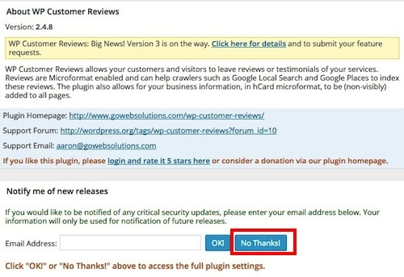
↓
下にいきます。

↓
ここは特にいじらなくてよいですが、Countryコードに「USA」とデフォルトで入っているので「JAPAN」と変えます。
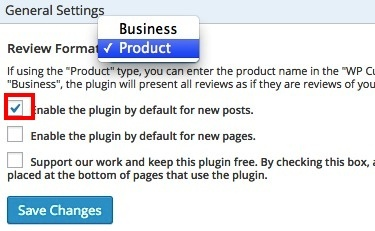
↓
「Product」を選び、３つのチェックの内、一番上にチェックをつけます。この設定で、各記事ページに対して評価投稿できるようになります。なお、上から２つめにチェックすると固定ページに対して評価投稿できるようになります。
↓
「Above Reviews」「Below Reviews」と選択できますが、これは「投稿の設置箇所」を投稿されたレビューの「上（Above）」にするか「下（Below）」にするか、です。好みに応じて決めて下さい。
今回はレビューの他に名前だけ必須項目にしたいので、「Name」にチェックします。
↓
「Heading to use for Review Titles」でタイトル使用時に使うタグを決められます。その他ですが、実際に投稿する際に使用するボタンです。上記のような文字を入力して「Save Changes」ボタンで保存します。・・・しかし、このプラグインにバグがあり下記のよう同一表示になってしまいます（2015年7月）。
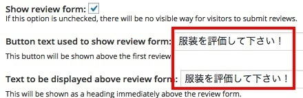
↓
ただ、これは特に大きな問題ではないのでOKです。これで、新規に記事を投稿するとレビュー投稿ボタンが下方に表示されるようになります。しかし、既に投稿している記事には表示されていませんので、下記のように設定します。
↓
記事の編集画面を開きます。
↓
ここで記事編集画面の下方にある「WP Customer Reviews」「Enable WP Customer Reviews for this page」にチェックして、通常の記事の「更新」ボタンを押します。
↓
チェックした記事の表示を確認しますと、下記のように「服装を評価して下さい！」とボタン表示されているのが確認できます。
↓
実際に、このボタンを押しますと、下記のように投稿フォーム画面が開きます。
↓
実際に投稿してみます。下記のように空欄にそれぞれ入力し、チェックを入れ「評価を送信する」ボタンをおします。
↓
しかし、下記のような表示が出てしまいます。
↓
これは「Review:」の「テスト投稿です。」の文字数が少ないからです。初期値は３０文字以上必要です。長めにして投稿してみます。
↓
無事に投稿が完了しますと、下記のようなメッセージが表示されます。「投稿ありがとうございました。承認後、反映されます。」といった意味です。
↓
ということで、管理者として投稿を承認し、反映させてみます。投稿されたメッセージは、ダッシュボードの「Customer Reviews」にあります。
↓
ここで、マウスポインタをメッセージ内容に下方にさせると「Mark as Approved 」が表示されるので、これをクリックします。
↓
サイトに戻りますと、下記のように表示されることが確認できます。
なお、メッセージ内容を編集したり、削除（Delete Forever）したりも出来ますので、確認してみて下さい。
さて、このプラグインは日本語に対応されていないので、可能な限り日本語にしようと思います。方法としては、ファイルに書かれている「英文」を「日本文」に直接書き換えて実現させます。
「WP Customer Reviews」の「編集」をクリックします。
編集ファイルとして下記のように表示されていることを確認します。
↓
キーボードのコマンド＋Fで検索して、地道に変更していきます。
「Name:」を「お名前：」に。
↓
「Review:」を「レビュー：」に。
↓
「* Required Field」を「* 必須項目」に。
↓
「Rating:」を「評価：」に。
↓
「Check this box to confirm you are human.」を「チェックを入れてください。」に。
↓
「Thank you for your comments. All submissions are moderated and if approved, yours will appear soon.」を「評価レビューありがとうございます！承認後に表示されますのでお待ち下さい！」に。
↓
↓
これを反映させる為に「ファイルを更新」ボタンを押します。
まだ他のファイルを編集します。右側に表示されている「プラグインファイル」にある「wp-customer-reviews/wp-customer-reviews.js」をクリックします。
これでこのファイルを編集できるようになります。
↓

３つある「Click here to hide form」の２つ* を「フォームを閉じる」に。（* 一つ目の 'Click here to hide form' はプログラムで使用するためこのままにしておきます。）
↓

さて、 すべて空欄で「評価を送信する」ボタンをクリックすると、下記のように表示されます。これもすべて英文ですので、ここも日本文に直します。
これも「wp-customer-reviews.js」ファイルで変更できます。「You must 」で検索すると５つほど出てくるので、該当する箇所をそれぞれ編集すればOKです。具体的には下記のようにします。
「You must include your "+nice_name+".」を「"+nice_name+"を入力して下さい。」に。
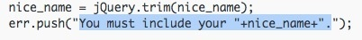
↓
「You must include a review. Please make reviews;entences. 」を「レビュー：を３０文字以上入力して下さい。」に。「You must confirm that your are human.」を「チェックを入れて下さい。」に。
↓
「Please select a star rating from 1 to 5.」を「評価をして下さい。」に。
↓
すべて終えて確認しますと下記のようになります。
以上、投稿フォームが下記のようにほぼ日本語化されました。残念ながら投稿フォームにある「Submit your review」の部分は編集できませんでした。
この部分はバグと関係があると思われますが、表示が英文というだけで、使えないことはないです。この日本語化問題に問題解決したい人は是非行ってネット上に公開して頂きたいです。
さて、ここまで出来たら閲覧者に評価をしてもらいましょう。実際に評価投稿させ、投稿を承認した後の画面が下記となります。
多くの人に評価を頂くことでサイトも活気づき、商品への客観的評価の信頼性も高まります。
管理者の商品評価用のプラグインを導入・設定する
管理者による商品評価はプラグイン「WP Review」で実現させます。
↓

インストールし、有効化させて下さい。その後は、ダッシュボードの「ウィジェット」をクリックします。
↓
「WP Review Widget」を「 サイドバーウイジェット」へと移動させます。
↓
次に「投稿一覧」画面を表示させます。
↓
ここで評価したい商品がある記事の「編集」ボタンを押します。
↓
下方に「Review」があるので、ここの「Review Type」を「Star」にします。
「Review Item」の 「Feature Name」に評価項目をいれます。項目の追加は「Add another」を押せば追加できるようになります。右にある「Star」で最小が１、最大が５の間で評価をします。
「Review Description」では「総合評価」を入れ、コメントを入れます。
ここまで入力したら右上にある「更新」ボタンを押します。ここで、実際にサイトにあるサイドバーをみてみましょう。
↓
先ほど評価した記事のみが表示されています。この記事をクリックします。
記事の下方に、評価項目と評価、コメントが確認できます。
・・・さて、評価の星が黒色というのはデザイン的にイマイチなので、これを黄色っぽく変えます。ダッシュボードの「プラグイン」-「WP Review」の「Settings」をクリックします。
↓
次の画面で、色を変えることができます。なお「Review Location」で評価を表示する場所を変更できます。「After Content」は記事の下に、「Before Content」は記事の上に評価を表示させることになります。なお先ほどは「After Content」だったので記事下に表示されていたわけです。
↓
実際に色を変えるには、「色を選択」をクリックすることで可能です。
↓
私は下記のように変更しました。
↓
ここで「変更を保存」ボタンをクリックして確定させます。
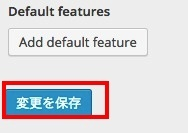
再度、評価表示をみてみると、デザインが指定した色に変わっていることが確認できます。
なお、「変更を保存」ボタンの上にある「Default features」であらかじめ評価項目を指定することが出来ます。これにより記事の編集画面でわざわざ評価項目を追加しなくても、すでに追加されている状態で評価できることになります。
３つの記事をすべて評価し、サイドバーをみてみますと、下記のように表示されているのが確認できます。
ここで、「Top Rated」と「Recent」のタブが２つありますが、この「Recent」を非表示にしたい場合は下記のようにチェックを外します。
↓
「Top Rated」だけが表示されているのが確認できます。
管理者の商品評価用のプラグイン導入・設定は以上です。
メルマガ配信のプラグインを導入・設定・運用する
定期的にサイトを訪れてくれる人はなかなか居ません。訪問者がよほどサイトを気に入ってくれなければ、ブックマークされず、２度目の訪問は難しいです。
しかし、メルマガ登録させれば、２・３度目の訪問をさせることが可能です。なぜならメールは誰もが毎日チェックする媒体だからです。このメルマガ内容にサイトへのリンクを貼れば、クリックさせて再度訪問させることができます。
肝心なのはサイト訪問者にメルマガ登録させることです。メルマガ登録させるには、メルマガ登録と引き換えに、無料でなんらかの有益な情報・特典を提供することです。そしてメルマガには役に立つ有益な記事や商品を説明してサイトに誘導・・・これはネット上での自社サイトへの集客方法の一つです。
・・・さて、メルマガ登録させ、配信させるプラグインがあります。この種のプラグインもいくつかありますが、この中で私が推薦するプラグインは次のプラグインです。
それは「MailPoet Newsletters」です。
↓
インストール・有効化したらダッシュボード「MailPoet」の「設定」をクリックします。
↓
↓
タブにより設定の切り替えを行います。まずは「基本設定」です。
↓
ここで、通知を受け取るメールアドレス「メール通知」と「通知の送信者」を決めることができます。「通知の送信者」は閲覧者へ送る際の名前となるので、ここは「店長」としました。
↓
高度な設定においても「返信先の名前とメールアドレス」の部分を「店長」とします。
上記を反映させる為に、「設定を保存」を押します。
↓
さて、次は「購読者」をクリックします。
↓
ここで「リストを追加」をクリックします。

↓
名前に「メルマガ」と入力し、「リストを追加」ボタンをクリックします。この"リスト"とは、メルマガ配信する１つの内容を代表するタイトルのようなものだと理解すればよいかと思います。
↓
次に「ニュースレター」をクリックします。
↓
「メールの新規作成」をクリックします。
↓
「スタンダードなニュースレター」として、件名を「ウケる服装とは？」、チェックボックス「メルマガ」にチェックを入れ、「次のステップ」ボタンを押します。
↓
次は実際にメルマガ配信する内容を決めます。初期状態にはすでに下記のように文字や画像が入っています。すべて削除して入力していきます。
↓
私は下記のような内容にしました。
↓
ここで内容確認として、設定した自身のメールにプレビューとして送信確認できます。
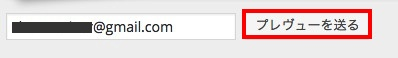
「プレヴューを送る」をクリックすると、下記のようにポップアップが表示されます。これは右上の「×印」で消せます。
↓
↓
下記が実際に私のGmailに送られたメールです。内容も反映されて送信されていることが確認できました。また、Gmailにある「To 自分」の右にある矢印をクリックします。
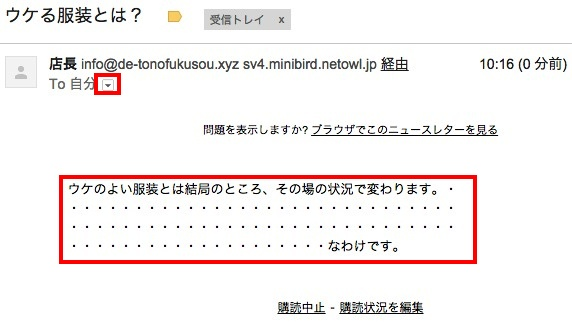
↓
下記のように表示されています。これは、メールが送信元「sv4.minibird.netowl.jp」のサーバーから「店長<info@de-tonofukusou.xyz>」として、「店長<info@de-tonofukusou.xyz>」と「店 長<XXXXX@gmail.com>」に送信されたという意です。

↓
さて確認してOKなら「次のステップ」ボタンを押します。
↓
そして「下書きとして保存して閉じる」を押しましょう*。 （* ここで送信を押しても、まだ送る相手がいません。）
さて次に、メルマガ登録させるウィジェットをつくります。再度「設定」に戻ります。
↓
↓
「フォーム」を選び「当たらしフォームを作る」をクリックします。
↓
右側にある「ランダムなテキスト、またはHTML」をドラックアンドドロップして左側の項目の１つとして追加します。
↓
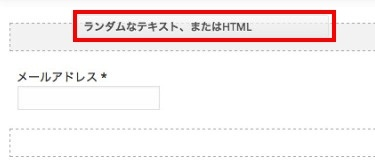
↓
「 表示を編集」をクリックします。
↓
ここで編集画面がポップアップしますので、ここに文章を入力して「終了」ボタンを押します。なお、ここに入力する文章はメルマガを登録させる為に非常に重要です。ポイントとしては３つあります。
- 他では入手できない独自の情報であることを"期待させる"こと。
- 配信する回数を記載し、メールの受信を具体的に"想像させる"こと。
- いつでもメール解除可能で、迷惑メールにならないよう"安心させる"こと。
以上です。ザックリとですが、今回は下記のように記載しました。
↓
そして下方にある「最初のリスト」を削除します。
これを「メルマガ」にします。
↓
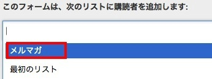

↓
「保存」ボタンを押し「ウィジェット」クリックします。
↓
サイドバーに「MailPoet Subscription Form」を追加します。
↓
ここで、タイトルを「無料で特典をゲット！」 として「保存」します。
↓
サイトのサイドバーには下記の表示されますので、実際にメールアドレスを入力して確かめます。私はyahooメールを持っていますので、これをつかってテスト確認してみます。メールアドレスを入力し、「購読！」を押します。
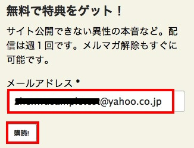
↓
しかしエラーが発生してしまいました。
↓
「Show more details.」をクリックすると、"メール機能がインストールされてない"という旨の文が表示されました。
↓
ここでミニバードの「サーバー管理ツール」の「メールアドレス設定」を開きます。
↓
ここでドメイン名「de-tonofukusou.xyz」の「選択」をクリックしてメールアドレスを作成します。
↓
メールアドレス追加において、メールアドレス「info」パスワード「（各自設定）」を入力し、「確認画面」ボタンを押します*。（* なお、メールアドレスの追加はお試し期間では使えません。初期費用と月額使用料を支払う必要があります。）
↓
これでメールアドレスが使えるようになりました。再度、確認テストを行います。
↓
エラーがなくなり、仮登録されたようです。

↓
yahooメールを開くと、購読承認メールが届いていました。「ここをクリックして購読を承認する」をクリックします。
↓
画面が切り替わり、正式に購読申し込みが完了したことが確認できます。
実際にこのメールアドレス登録から正式承認のプロセスで、ダッシュボード「MailPoet」の「購読者」のステータスも下記のように変わります。

↓
メルマガ登録者に対して「ニュースレター」からメルマガ配信します。
↓
既に配信内容は作られています。送信は下記の「編集」行っていきます。
↓
「次のステップ」をクリックします。
↓
「送信」を押します。
↓
「待たずにすぐメールを送信」を押します。
↓
ポップアップを「OK 」します。
↓
画面が変わります。
↓
下記が実際にyahooメールに送られたメール内容です。 実際に送信されたことが確認できました。また、購読中止も行ってみます。「購読中止」をクリックします。
↓
画面が切り替わります。
↓
ここでステータスが「購読中止」と変わります。
↓
そして、自身のメールにもメルマガの購読者が減ったことを通知するメールが届きます。

以上が一連の流れです。
次にこの「MailPoet Newsletters」の運用方法です。実は「購読者」において、購読者に対するリストを変更させることができます。変更の仕方は下記のようにリストを選んで「適応」をクリックするだけです。
↓
リストの「メルマガ」から「最初のリスト」に変更できました。これをうまく使えば、最初に配信したい幾つかのリストを作成しておいて、順次適応し配信させていくことができます。例えば、「メルマガ」→「メルマガ２」→「メルマガ３」→「メルマガ４」→「メルマガ５」という感じです。
さて、以降は細かい点についてです。「設定」において、初期では「PHP Mail」にチェックがあるかと思いますが、これは「Sendmail」にしましょう。この変更でサーバーに対する不可が軽減されます。
また、メルマガ購読者に届いたメールを返信すると、ミニバードのメールに届くか確認します。下記のように返信します。
↓
「WebMail」 の下にある「ログイン」をクリックするとメール管理画面に移動します。
↓
yahooから返信メールが届いていることが確認できます。
レンタルサーバーは通常、メールの送受信に制限を設けています。ミニバードは下記のような制限を課しています。
http://www.minibird.jp/man/mail_base.php
メルマガ登録の特典用ファイルなどを添付するのは難しいので、ファイル転送サービスを使ってURLからダウンロードさせれば対応できます。
以上のように、WordPressのプラグインを利用し、無料でメルマガ配信システムを導入・運用できることができます。
グーグルへのインデックス登録と４つのテストを受ける
グーグルへインデックス登録（サイト登録）します。これはグーグルにサイトの存在を知らせ、検索結果に表示させる為です。実際に検索結果の１ページ目に表示させるのはさらなる努力が必要ですが、そのスタートの第一歩として必須です。
下記URLにアクセスします。
https://www.google.com/webmasters/tools/submit-url
↓
↓
サイトURLと画像認証番号を入力し「リクエストを送信」ボタンを押します。
これでOKです。経験上ですが、リクエスト送信後、サイトタイトルを検索キーワードとして検索すると、数日後には検索結果を確認できました。タイミングにもよりますが一週間以内にはインデックス登録されると思います。
次にテストを受けてみます。モバイルフレンドリーテストとスピードテスト３つの計４つです。
- モバイルフレンドリーテスト
- スピードテスト（PageSpeed Insights）
- スピードテスト（GTmetrix）
- スピードテスト（Pingdom）
まずモバイルフレンドリーテストですが、これはスマートフォンやタブレットに対応したサイトであるか？をテストされます。
これもサイトURLを入力し「分析」ボタンをクリックすればOKです。
↓
下記のように表示されればモバイル対応サイトとして問題ありません。
次にスピードテストです。
まず１つ目の「PageSpeed Insights」をやってみます。下記URLにアクセスし、空欄にサイトURLを入れ、「分析」ボタンを押します。
https://developers.google.com/speed/pagespeed/insights/
↓
↓
満点が100点としての点数が表示されます。今回は７８点でした。目安として70点以上であればOKだと思います。また、速度が上げるためのいくつかの修正をアドバイスされます。特にJavascript/CSS系のファイルの修正アドバイスされますが、これはWordPressでのプラグインとして必要となるファイルだったりするので、修正しなくて良いでしょう。
次に「gtmetrix」というスピードテストを受けてみます。下記URLにアクセスします。
↓
↓
これもスコア表示されます。
スコアの下にある「Waterfall Chart」タブをクリックすると、ブラウザがサイト表示していく際に読み込んでいくファイルのプロセスが表示されます。
最後のスピードテストです。 下記URLにアクセスし、サイトURLを入力し「Test Now」ボタンをクリックします。
↓
↓
点数、リクエスト総数、ローディング時間、ページサイズが表示されます。
↓
ここで、下方にあるプルダウンメニューを「Sort by load time」に変更してみます。
↓
これで、読み込みの遅い順番に表示されるようになります。
小さくて見づらいですが、「font awesome」というWebフォントの読み込みが最も遅いのがわかります。これは最もサイズが大きいからです。ファイルサイズが大きめのjquery.jsファイルの読み込みが遅いのも確認できます。そして、次あたりから画像ファイルの拡張子「jpg」がいくつか表示されています。
このように読み込みの遅いファイルを具体的に知ることができます。あまりにも読み込みの遅いサイズの大きい画像ファイルなら、差し替えを検討した方がよいでしょう。
アクセス解析・ウェブマスターツールを設定する
アクセス解析には「Google Analytics」を利用します。
下記URLにアクセスしログインします。Googleアカウントを持っていない人は新規登録して下さい。
https://www.google.com/intl/ja_jp/analytics/
↓
ログインしたら右にある「アナリティクス設定」をクリックします。
↓
アカウントにあるタブ* をクリックし、下方にある「新しいアカウントを作成」をクリックします。ここで言う「新しいアカウント」とは、サイトのアカウントとなります。一つのサイトのアクセス解析に一つのアカウントを作成するわけです。（*私は既に複数のサイトを登録していますので、画面が違うかもしれません。）
↓
空欄に入力していきます。アカウント名は１つのサイトにつき１つなので、サイト名の一部の名前やドメイン名の一部で良いでしょう。
↓
入力し終えたら「トラッキングIDを取得」をクリックします。
↓
「日本」を選択し「同意する」と続けていきます。
↓
コードが 表示されますので、UAから始まるハイフンを含める数字をメモしておきます。
↓
ダッシュボードに戻り「カスタマイズ」をクリックします。
↓
ここの左側メニューにある「アクセス解析（Analyticsなど）」をクリックします。
↓
ここにさきほどのUAから始まるコードを入力します。
↓
「保存して公開」ボタンを押します。
以上でアクセス解析の設定は完了です。
続いてウェブマスターツールの設定を行います。
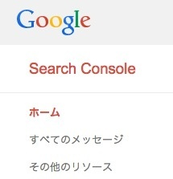
ウェブマスターツール
https://www.google.com/webmasters/tools/home?hl=ja
↓
上記URLにアクセスし右側にある「プロパティを追加」をクリックします。
↓
サイトURLを入力し、「続行」ボタンを押します。
↓
このサイトURLの所有権を確認されます。「別の方法」タブをクリックします。
↓
ここの「HTMLタグ」にチェックをします。
↓
すると下記のようにコードが展開されますので、このコードの「content="xxxx.....xxxxx"」部分をコピーします。
ここでダッシュボードの「カスタマイズ」にある「アクセス解析（Analyticsなど）」を開き、先ほどのアクセス解析のコードと同じように、貼付けます。
↓
「保存して公開」ボタンを押します。
再度ウェブマスターツールに戻り、「HTMLタグ」にチェックした状態で「確認」ボタンを押します。
↓
すると次のようになります。
↓
「続行」をクリックすると 画面が変わります。
↓
「サイトマップの追加/テスト」をクリックします。
ここで、いったんウェブマスターツールとは別に「サイトマップ」というものをWordPress側で作ります。これはサイトマップを作成するプラグイン「Google XML Sitemaps」で実現させます。
↓

↓
インストール・有効化し、「設定」から「XML-Sitemap」をクリックします。
↓
ここからはチェックボックスで設定です。下記のように設定します。（ここでの設定の考え方ですが、Google検索エンジンに対しての検索される優先順位を決めるような感じです。）
↓
「設定を更新」ボタンを押して、保存します。
↓
ここで画面が更新します。サイトマップのURLが表示されますので、これをクリックして実際にサイトマップをみてみましょう。
↓
下記のように表示されればOKです。
ウェブマスターツールに戻って「sitemap.xml」と入力し、「サイトマップを送信」ボタンを押します。
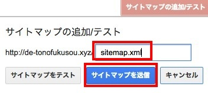
↓
画面が切り替わります。「ページを更新する。」をクリックします。
↓
送信されたサイトマップが表示されます。
以上で、アクセス解析とウェブマスターツールの設定が完了しました。
グーグル検索に対するレビュー表示を設定をする
グーグル検索結果で１ページ目に表示させることはアクセスアップに重要です。さらに言えば、レビュー表示もさせることが出来れば、注目が集まりクリックされやすくなるでしょう。
これは、グーグルのウェブマスターツールで実現できます。
ウェブマスターツールにアクセスします。
https://www.google.com/webmasters/tools/home?hl=ja
検索デザインから「データ ハイライター」をクリックします。
↓
右画面にある「ハイライト表示を開始」をクリックします。
↓
するとポップアップ画面が表示されますので、投稿ページの一つのURLを記入し、「このページをタグ付けし、他のページも同様にタグ付けする」を選び、OKを押します。
↓
タグ付けの方法は、文章（数字）や画像を選び、それに対して「名前」「料金」「評価」などをタグとして選びます。
↓
それぞれ行っていきます。
↓
上記をそれぞれ設定しました（画像のやり方も同じです）。それぞれ設定した部分が、右画面に表示されます。今回は計４カ所です。
↓
「完了」ボタンを押します。
↓
ここで、同様に設定させるページを選択します。これはこのままでよいので「ページセットを作成」をクリックします。
↓
すると選択したページも同様に自動的にタグ付けが設定されます。ここで、それぞれのページのタグ付けに間違えがないか、各ページを確認するよう促されます。
↓
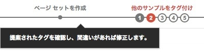
それぞれのページを確認してよければ「次へ」ボタンをクリックしていきます。
↓
すべてのページの確認が終わったら「OK」ボタンを押します。
↓
完了です。上部画面は下記のようになります。
↓
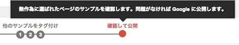
「公開」ボタンを押します。
↓
画面が切り替わります。
↓
この設定が反映されれば、グーグル検索結果でレビュー表示されます。
柴犬会長
サーバー構築・超入門 - CentOS 6.5
- 「サーバー構築」として個々ソフトウェアのインストールは、インターネット上の情報を参考にしつつ手順を踏んでコマンドを打てば出来ます。しかしそれは、なにを実現するための構築なのか？、その設定はシステムの位置づけとしてどんな意味があるのか？といった点が欠落しがちです。初めて「サーバー構築」を学習する人にとって、この欠落部分への理解が重要だと考えております。本書はこれをわかりやすく理解できるよう、140近くの掲載画像数を交えて説明しております。著者が実際に構築して進めていく上で行き詰まった部分も掲載しておりますので、非常に参考になると思います。多少のネットワーク知識がありLinuxコマンド操作も出来るけど、「サーバー構築」で行き詰まるという初心者、また中級者の方にもお勧めです。購入は、こちらから。
Entry to using the Cisco router switch after attaining CCNA
- 「CCNA取得後のCiscoルーター・スイッチ実機入門」英語版です。The manual is for people who have not started using the existing device yet though they've already got CCNA. This manual contains enough photos and images for you to understand the instructions and contents with relevance to your device without overloading you with non essential information that may cause confusion. I would be very happy if this manual allows users to better understand and utilize their device. 購入は、こちらから。
CCNA取得後のCiscoルーター・スイッチ実機入門
- 本書は、CCNAを取得したが実機を扱ったことがない、という方を対象としております。読者がわかりやすく理解できるよう、写真やイメージを豊富に使っております。また、混乱を招く細かい説明を思い切って省き、本質を理解することに注力しております。本書を活用し、実機への理解ときっかけになって頂ければ幸いです。購入は、こちらから。
IT現場の英文ライティング
- 本書は、IT現場で実際にやり取りされている英文メールを紹介している。対象は、ITに関わるエンジニアや制作者である。英文ライティングの本は数多く出版されているが、参考となりえる英文は皆無と言っていい。多くが文法的な解説が主であったり、ITとは全く関係のない文法の解説だったりする。実際にやり取りする英文メールはパターン化しており、使用される単語も難しいものではない。なにより、ITは英語以上に世界共通語である。簡単な英文で海外のエンジニアや制作者とのやり取りを行えることを実感して欲しい。 購入は、こちらから。
脱！富士登山 - 自分の山を探す！
- 皆さん、富士山は登りましたでしょうか？富士山が世界遺産に登録され、これを機に初めて山に登った方もおられることでしょう。「山頂からの景色が素晴らしかった。」「涼しくて気持ち良かった。」という方も居れば、残念ながら「人が多すぎて登りにくかった。」「高山病になって辛かった。もう二度と行かない。」という方も居ます。当然のことですが、富士山は多くの山の１つに過ぎません。日本には多く山があり、自分に合った山が必ずあります。また、山の楽しみ方は人それぞれです。本書は、ここ一年間約４０近くの山を登った著者が、標高・季節・景観などを考察して感じたことを記しています。単独行派の私の登山感想に近いですが、登山の参考またはネタにして頂ければ嬉しいです。購入は、こちらから。
ブラック企業と雇用契約書 - 私達の戦略
- 日本社会の仕事によるうつ病･自殺問題などは、長時間労働と"業務範囲の不明確さ"が原因である、と私は強く思っている。自分の担当する仕事のみならず"会社組織の一員としての働き"という"不明確な会社の要求とその評価"が、私達を疲れさせている。"不明確な会社の要求とその評価"が、私達を追いつめる。ブラック企業・上司は、まさにこの不明確な"会社組織の一員としての働き"を利用し、私達に"頑張る姿勢"を常に求め、追いつめる。そもそも私達は、雇用契約書を会社と取り交わし、基本的にはその契約に則って働くわけである。極端な話だが、契約を取り交わした業務内容さえこなせば、なんら問題ないはずである。・・・本書は、会社から要求される契約以外の業務への対処方法と知識習得の本である。・・・会社に潰されない為に、そして日本の労働環境改善の為に、私達は何をすべきなのか？ 購入は、こちらから。
Piwigoで画像共有サイト構築
- Piwigoは、PHP、MySQL上で動くCMSです。このPiwigoを利用すれば、簡単に画像共有サイトを作成することが出来ます。本書は、Piwigoのインストール、テーマ変更、モジュール導入と使い方、ユーザー管理や権限設定などを解説しております。WordPressやXOOPS、EC-CubeといったCMS導入経験のある中級者向けの本です。購入は、こちらから。
日本人への処方箋
- 選んだ会社が間違っていたのだろうか？私は長く勤めたいと思った会社がない。知人が「心の病気」にかかり薬を飲むようになってから、これらの問題の本質と解決策などをネットや書物で模索し始めた。どうやらこの理由は、私自身が日本の労働環境と労働観についていけないという点にあるようだ。本書は、著名人や人気ブロガーの記事を引用し、日本の労働環境や日本人そのものの生き方に疑問を投げかけている。日本の高い自殺率や「生きづらさ」を理解し、社会が少しでも改善すれば私は嬉しい。購入は、こちらから。
実戦演習・ブラック企業へのツッコミ方
- モノ・サービスを売って利益を上げることは非常に難しい。普通の会社であるなら、不況になれば売上も減るのが当然だ。しかし、このような不況下でも成長している会社がある。それは、ブラック企業だ。会社にとって一番のコストは人件費だ。そこでブラック企業は...2人分相当の仕事を1人でやらせる、相互監視システム導入する、助成金目当ての採用をする、コストに見合わなくなったら退職させる・・・のようなことをする。そう、いまや人材は一つのリスク・リターンの扱いになってしまった。この本は、ブラック企業に入ってしまったときの有効的な対処方法、そして、実際に私が行った各種手続きを記述している。あなたもブラック企業も恐れるリスク要因となって頂ければ、心強い。購入は、こちらから。